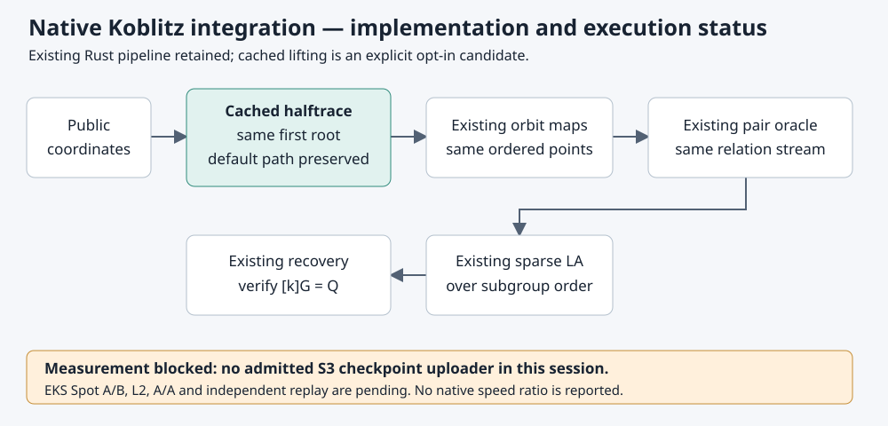

2026-10-30 · Engineering implementation candidate · Generic decomposition track
Measurement pending. The native baseline was built before edits. The session's mandatory S3 checkpoint upload failed because no approved uploader is configured. Actions preparation run 41082358257 also failed because its upload secret is absent; build and experiment jobs were skipped. No native speed ratio is claimed.

Lazy, curve-local, shared byte tables evaluate the existing odd-degree halftrace.
The opt-in factor-base parameter halftrace_tables=1 preserves the exact
first root, ordered points, signed orbit maps and existing relation/LA machinery.
Default recipes retain the prior point-lifting implementation.
Native tests compare exhaustive small-field roots and sampled wider roots with the generic field definition, check cache sharing and field separation, and test scope restoration. The existing point-order test includes generic coefficients. A native integration fixture compares two- and three-summand known-answer solves. The original full release suite completed with 5447 passes, zero failures and 123 existing ignored tests; final-source filters and strict Clippy pass separately. Later main merges expose successive upstream syntax errors and are not validated by those older passes. Development elapsed times are not performance measurements.
The spec uses eight independent one-target workloads on the existing registered degree-31 Koblitz curve, matched baseline/candidate bases and strong-rho and IC A/A controls. Six measured alternating rounds and one warmup require L2 EKS Spot admission and independent scalar replay. Cache setup is inside the cold cost.
Degree 31 has ord31(2)=5; it does not discharge the degree-83 confidence gate or establish scaling to ECC2K-130. Coarse Artin–Schreier solve counts alone do not price the optimization. External arithmetic comparisons remain unmeasured.
Baseline: 3b34d504bc13ce668e86d8e68cdf57e3fbaba89a.
Implementation: src/cryptanalysis/koblitz_fast.rs,
koblitz_index_calculus.rs, and ic_framework/plugins.rs.
Scientific source pin: 7c58661935b79153ff74c1208d0592aa56ed04a1.
See README.md, PROTOCOL.md,
prospectively frozen protocol.json,
spec.json, BASELINE.txt, and
the access problem record.
SEC 1 v2.0 §2.3.4 supplies the binary point-recovery contract; existing native
trace/halftrace implementations supply the linear-map precedent.